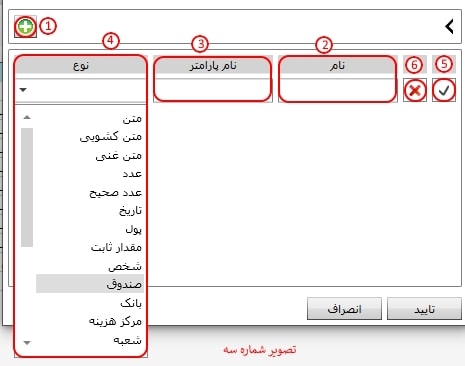
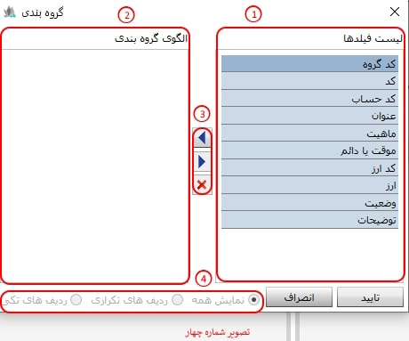
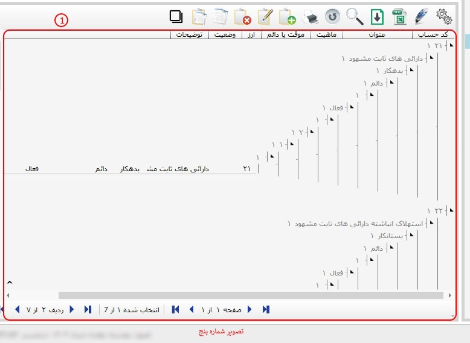

در این بخش، ابزارهای عمومی که در سیستم و زیر سیستم های نرمافزار، به کار رفتهاند، مورد بررسی قرار میگیرند. ممکن است هر یک از این ابزارها در فرمهای مختلف مورد استفاده قرار گرفته باشند.
در تصویر شماره یک، نمونهای از ابزارهایی که در نرمافزار مورد استفاده قرار میگیرند، نمایش داده شده است.

 تغییر فیلدها (Ctrl + H ) :
برای هر یک از فرمهای موجود در نرمافزار، تعدادی فیلد اطلاعاتی تعریف شده است. پس از انتخاب گزینه تغییر فیلدها، میتوانید فیلدهای دلخواه و موردنظر خود را مشاهده نمایید.
تغییر فیلدها (Ctrl + H ) :
برای هر یک از فرمهای موجود در نرمافزار، تعدادی فیلد اطلاعاتی تعریف شده است. پس از انتخاب گزینه تغییر فیلدها، میتوانید فیلدهای دلخواه و موردنظر خود را مشاهده نمایید.
نکته: لازم به ذکر است در هر قسمت از نرمافزار، با انتخاب گزینه تغییر فیلدها، فیلدهای اطلاعاتی مرتبط با همان بخش نمایش داده میشود. (مطابق تصویر شماره ۲)

-کادر شماره یک:
-کادر شماره دو:
فلش به سمت چپ، فیلدهای انتخابشده در بخش فیلدهای غیرفعال را به فهرست فیلدهای فعال منتقل میکند.
فلش به سمت راست، فیلدهای انتخاب نشده در بخش فیلدهای فعال را به فهرست فیلدهای غیر فعال منتقل میکند.
این گزینه امکان جابهجایی موقعیت فیلد فعال انتخابشده را فراهم میکند.
این گزینه امکان جابهجایی موقعیت فیلد فعال انتخابشده را فراهم میکند.

با استفاده از کلید فوق می توانید فیلد مورد نظر خود را در جدول ایجاد نمایید، نمایش فیلد سفارشی مشروط بر آنست که این فیلد در گزارشات پیشین شما محاسبه و «وجود» داشته باشد. برای این منظور این گزینه را کلیک کنید و اکنون پنجره تنظیم فیلدهای سفارشی را مشاهده خواهید کرد.

-کادر شماره یک: با کلیک روی آیکون شماره ۱، میتوانید یک ردیف جدید برای تعریف فیلد سفارشی اضافه کنید.
-کادر شماره دو(نوع): با باز کردن کشوی نوع، میتوانید نوع پارامتر مورد نظر خود را انتخاب نمایید.
-کادر شماره سه(نام پارامتر): در این بخش، میتوانید نام پارامتر مورد نظر خود را وارد نمایید.
-کادر شماره چهار(نام):
-کادر شماره پنج:
-کادر شماره شش:
گروه بندی (Ctrl + G ): برای هر یک از فرمهای موجود در نرمافزار، از طریق قابلیت گروهبندی میتوانید فیلدهای مربوطه را بر اساس ساختار درختی، گروه بندی نمایید.
نکته: لازم به ذکر است در هر قسمت از نرمافزار، با انتخاب گزینه گروه بندی، فیلدهای اطلاعاتی مرتبط با همان بخش نمایش داده میشود.
-کادر شماره یک(لیست فیلد ها):
-کادر شماره دو(الگو گروه بندی):
-کادر شماره سه:
-کادر شماره چهار:

 صدور به اکسل :
امکان ارسال اطلاعات به نرم افزار اکسل از طریق این ابزار برای شما
مهیا گردیده است. لازم به توضیح است که این ابزار در تمامی جداول طراحی
شده در نرم افزار این ابزار پیاده سازی شده است.
صدور به اکسل :
امکان ارسال اطلاعات به نرم افزار اکسل از طریق این ابزار برای شما
مهیا گردیده است. لازم به توضیح است که این ابزار در تمامی جداول طراحی
شده در نرم افزار این ابزار پیاده سازی شده است.
برای این منظور تنها کافیست که ابزار «صدور به اکسل » را کلیک و پس از آن محل ذخیره فایل اکسل را در پنجره پیش رویتان مشخص نمایید. اکنون می توانید فایل موردنظرتان را در مسیر از پیش تعیین شده مشاهده نمایید.
علاوه بر آن در صورتی که تنها ردیف های خاصی از لیست موجود برای ارسال به اکسل موردنیاز است، همزمان با انتخاب ردیف های دلخواه و فشردن کلید Ctrl، و کلیک «صدور به اکسل» عملیات انتقال به اکسل را انجام دهید.
 ورود از فایل :
توضیحات مربوط به این گزینه
را می توانید در لینک زیر مشاهده کنید.
ورود از فایل :
توضیحات مربوط به این گزینه
را می توانید در لینک زیر مشاهده کنید.
ورود از فایل
 جستجو و فیلتر( F3 ) :
با کلیک بر روی این آیکن پنجره زیر باز می شود و شما
را قادر به جستجو در میان صفحات می نماید:
جستجو و فیلتر( F3 ) :
با کلیک بر روی این آیکن پنجره زیر باز می شود و شما
را قادر به جستجو در میان صفحات می نماید:

در هر صفحه در حال اجرا، در صورتی که روی آیکن جستجو کلیک کنید امکان جستجو
در فیلد های همان صفحه را به شما می دهد. با
از لیست اول از سمت راست می توانید از لیست
باز شده، فیلد جستجوی موردنظرتان را مشخص کنید. در
لیست دوم «شرط جستجو» و در لیست سوم نتیجه جستجو
را تعیین نمایید. برای تایید شرط جستجو کلید Enter «تایید» یا آیکن
 را از سمت چپ پنجره مربوطه
انتخاب کنید و نتیجه جستجو را مشاهده نمایید.
را از سمت چپ پنجره مربوطه
انتخاب کنید و نتیجه جستجو را مشاهده نمایید.
همچنین با کلیک روی
 (Ctrl + Plus) می توانید فیلتر
دیگری افزوده و شروط جستجو را
افزایش دهید.
(Ctrl + Plus) می توانید فیلتر
دیگری افزوده و شروط جستجو را
افزایش دهید.

آیکن «ضربدر »
 یا کلید Escape فیلتر ایجادی شما را
کنسل می کند و آیکن
یا کلید Escape فیلتر ایجادی شما را
کنسل می کند و آیکن
 یا کلیدهای Ctrl + E صفحه فیلتر شما را
بر حسب نیاز تغییر می دهد.
یا کلیدهای Ctrl + E صفحه فیلتر شما را
بر حسب نیاز تغییر می دهد.
 باز خوانی ( F5 ) :
در صورتی که تغییری را در
صفحه ای ایجاد کردید ولی تغییر ایجاد شده
را مشاهده نکردید می توانید با کلیک روی
این آیکن تغییر اعمال شده را مشاهده کنید.
باز خوانی ( F5 ) :
در صورتی که تغییری را در
صفحه ای ایجاد کردید ولی تغییر ایجاد شده
را مشاهده نکردید می توانید با کلیک روی
این آیکن تغییر اعمال شده را مشاهده کنید.
 ایجاد( F8 ) :
برای ایجاد یک رکورد یا اطلاعات جدید
(با توجه به صفحه در حال اجرا) می توانید از
این آیکن استفاده نمایید، با کلیک بر روی
این آیکن فرم ایجاد مربوطه ظاهر می شود.
ایجاد( F8 ) :
برای ایجاد یک رکورد یا اطلاعات جدید
(با توجه به صفحه در حال اجرا) می توانید از
این آیکن استفاده نمایید، با کلیک بر روی
این آیکن فرم ایجاد مربوطه ظاهر می شود.
 ویرایش( F2 ) :
برای ویرایش اطلاعات در هر
صفحه می توانید از این آیکن استفاده کنید.
ویرایش( F2 ) :
برای ویرایش اطلاعات در هر
صفحه می توانید از این آیکن استفاده کنید.
 حذف ( F9 ) :
برای حذف اطلاعات
(با توجه به فرم در حال اجرا)
از این آیکن استفاده کنید.
حذف ( F9 ) :
برای حذف اطلاعات
(با توجه به فرم در حال اجرا)
از این آیکن استفاده کنید.
 کپی (Ctrl + C ) :
چنانچه مایل بودید اطلاعاتی را در فرم یا جدول در حال اجرا یا
جداول دیگر کپی کنید می توانید لیست اطلاعات
مورد نظر را انتخاب کرده و روی آیکن کپی
کلیک کنید. با این کار مورد انتخاب شده
در حافظه موقت سیستم ذخیره خواهد شد.
کپی (Ctrl + C ) :
چنانچه مایل بودید اطلاعاتی را در فرم یا جدول در حال اجرا یا
جداول دیگر کپی کنید می توانید لیست اطلاعات
مورد نظر را انتخاب کرده و روی آیکن کپی
کلیک کنید. با این کار مورد انتخاب شده
در حافظه موقت سیستم ذخیره خواهد شد.
 چسباندن ( Ctrl + V ) :
پس از کپی کردن اطلاعات چنانچه
این آیکن را در صفحه فرم یا جدول دیگری کلیک کنید
یک کپی از مورد ذخیره شده ایجاد خواهد شد.
چسباندن ( Ctrl + V ) :
پس از کپی کردن اطلاعات چنانچه
این آیکن را در صفحه فرم یا جدول دیگری کلیک کنید
یک کپی از مورد ذخیره شده ایجاد خواهد شد.
 نکته: لازم به توضیح است، در نرم افزار سایان
امکان کپی و چسباندن به صورت گروهی و
علاوه بر آن بین پایگاه داده های مختلف وجود دارد.
نکته: لازم به توضیح است، در نرم افزار سایان
امکان کپی و چسباندن به صورت گروهی و
علاوه بر آن بین پایگاه داده های مختلف وجود دارد.
 پرینت ( Ctrl + P):
به کمک این ابزار می توانید
گزارشات موردنظرتان را بر روی کاغذ چاپ کنید.
پرینت ( Ctrl + P):
به کمک این ابزار می توانید
گزارشات موردنظرتان را بر روی کاغذ چاپ کنید.
 ذخیره در فایل ( Ctrl + S ):
به وسیله این ابزار می توانید اطلاعاتی
از قبیل سرفصل حساب ها، الگوهای صدور سند و ...
را در فایلی از رایانه خود ذخیره کنید.
ذخیره در فایل ( Ctrl + S ):
به وسیله این ابزار می توانید اطلاعاتی
از قبیل سرفصل حساب ها، الگوهای صدور سند و ...
را در فایلی از رایانه خود ذخیره کنید.
 خواندن از فایل(Ctrl + O):
در صورتی که شما فرمت اطلاعاتی سرفصل حساب ، الگوهای صدور سند و
موارد مشابه را به صورت فایل XML ذخیره کرده اید، از طریق ابزار مذکور می توانید
آنها را استانداردسازی و بازیابی نمایید.
خواندن از فایل(Ctrl + O):
در صورتی که شما فرمت اطلاعاتی سرفصل حساب ، الگوهای صدور سند و
موارد مشابه را به صورت فایل XML ذخیره کرده اید، از طریق ابزار مذکور می توانید
آنها را استانداردسازی و بازیابی نمایید.
 برگشت به قبلی( Back ) :
این ابزار امکان بازگشت به سطح بالاتر را میسر می کند،در صورتی که
پارامتری را در سمت چپ داشته باشید با کلیک بر روی این
ابزار می توانید به عملیات مربوط به پارامتر بر می گردید.
برگشت به قبلی( Back ) :
این ابزار امکان بازگشت به سطح بالاتر را میسر می کند،در صورتی که
پارامتری را در سمت چپ داشته باشید با کلیک بر روی این
ابزار می توانید به عملیات مربوط به پارامتر بر می گردید.
 نمایش درخت (Ctrl + T)
این امکان برای شما مهیا شده بتوانید
در ستون سمت راست صفحه «نمایش درختی» عملیات ها
را مشاده و یا آن را مخفی نمایید.
نمایش درخت (Ctrl + T)
این امکان برای شما مهیا شده بتوانید
در ستون سمت راست صفحه «نمایش درختی» عملیات ها
را مشاده و یا آن را مخفی نمایید.

برای مشاهده رکوردها در لیست و جداول اطلاعاتی در صورتی که بخواهید رکوردهای اول و آخر، قبلی و بعدی و یا تعداد آنها را مشاهده نمایید از ابزارهای فوق استفاده نمایید.